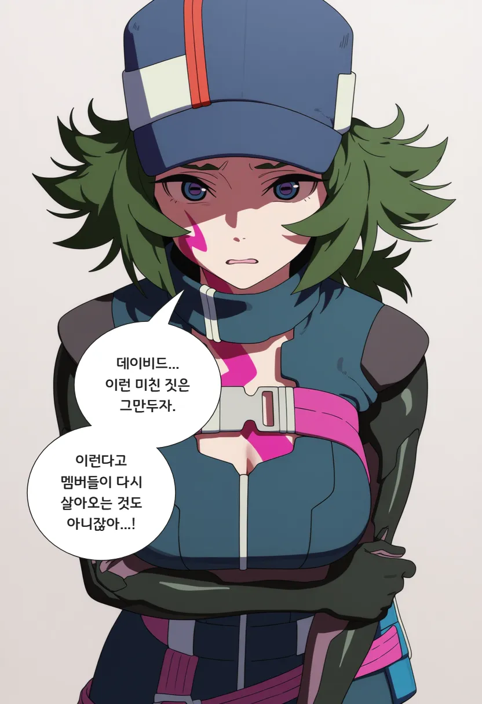
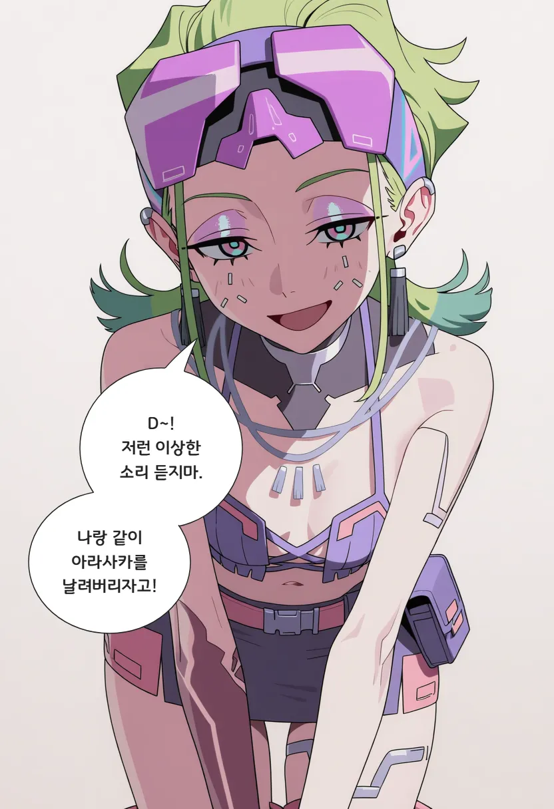
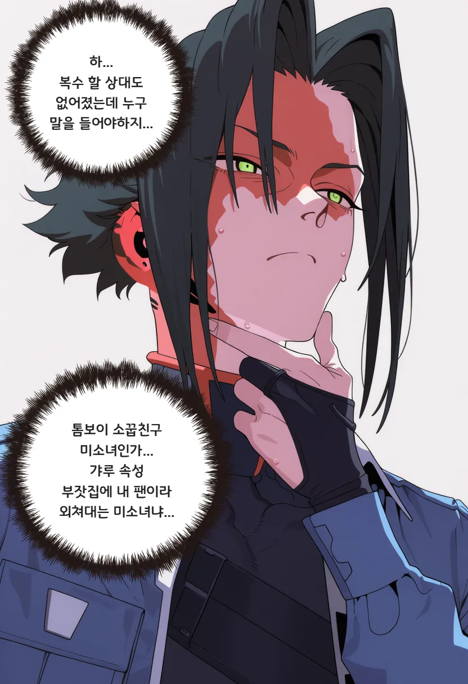
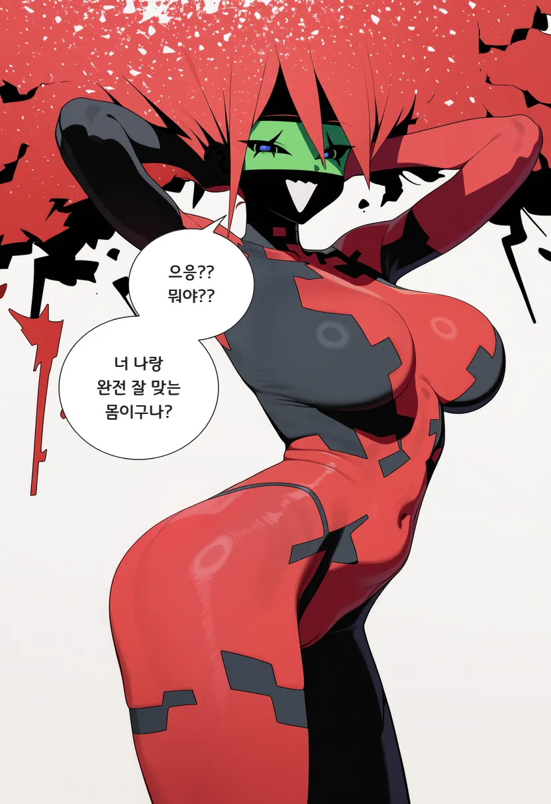
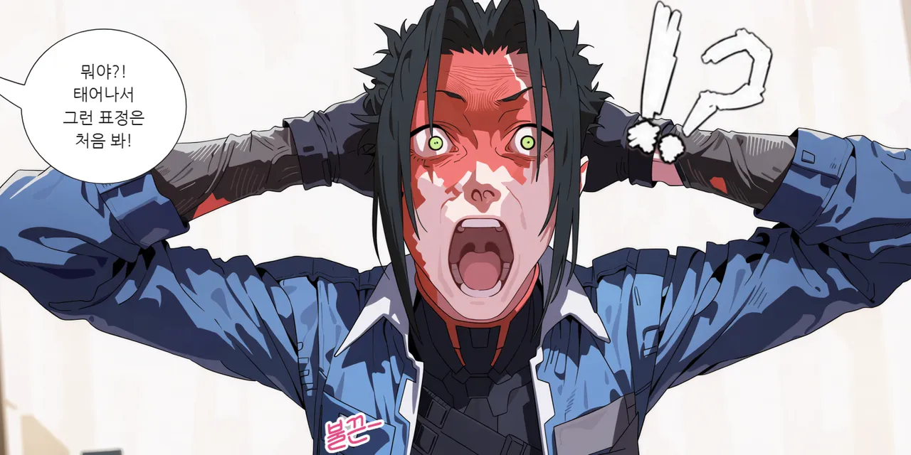
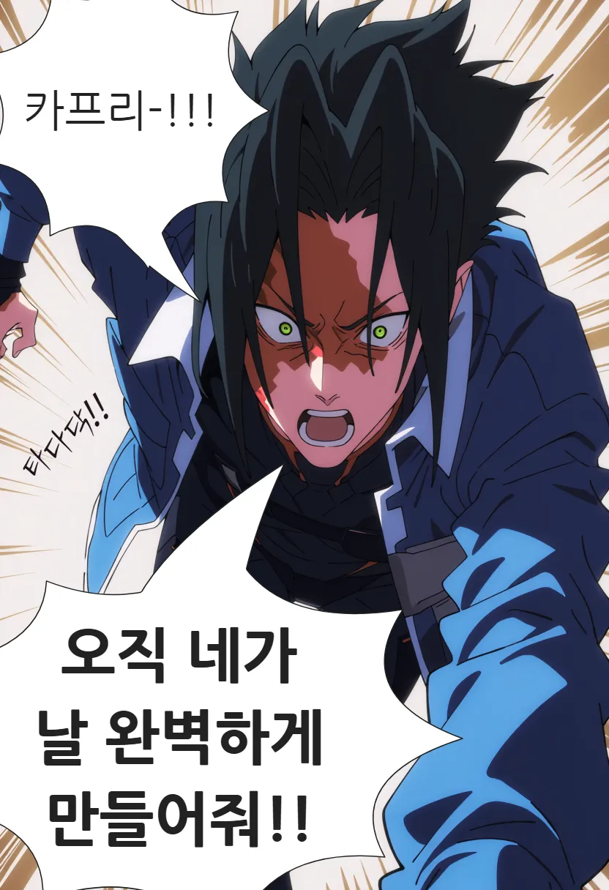

아직 안봐서 잘 모르겠네






아직 안봐서 잘 모르겠네
ㄹㅇㅋㅋ
V 랑 만날 필요도 없이 문자 날리면 아빠 죽인 놈인지 년인지 딜도로 패 죽여줬을텐데. 그러고나면 대충 2300원 정도 주면 끝임 ㅋㅋ
V를 보고 또 그뽕맛을 못잃어서 D같은애를 찾아다니는 시청자를 저격한캐릭터같았움
아무리 세탁을 돌려도 엣2 각본은 족구림
톰보이거유녀
각본이 딱봐도 뭔가 내부에서 대판싸워서 갈렸구나 하고 티가남
서사가 띡띡 끊김. 과거편 한 4~5화정도 더 나왔야 이해되는 느낌이야
2 감독이 사펑을 몰라서 설정상 안되는거 자꾸 이거 됨? 이거 안됨? 하고 물어보면서 빠꾸먹고 각본 존나 바꿨다더라
? 2감독 1감독이랑 같은사람 아니었냐? 1만든사람이 설정을 몰랐다고?
2를 만든 감독은 사펑1에서 메인 사망회차 만든 사람임 전체가 아니라
2감독은 1감독이랑 다름 시즌1 감독 바빠서 시즌1 6화 담당한 애가 2감독이 된거임
https://m.ruliweb.com/family/211/board/300015/read/2439765 인터뷰 보면 애초에 시즌1 6화에 힘 다썼다고 부담스러웠다고 함
이런 시발 그러면 작업을 받지 말았어야지
그래서 욕좀 먹고있음 인터뷰에 나온 모습도 시즌2에 나온 쿄코랑 똑같아서 자캐딸한거 아니냐는 말도 돌고 있고 개봉전에 원더 에그 감독처럼 한화씩 맡을때 연출만 좋았지 감독으로는 첫작인데 망하는거 아니냐 하는 말이 있었는데 그대로 실현해버림
ㄹㅇ똑같이 생겼네ㅋㅋㅋㅋㅋㅋㅋㅋㅋㅋ
각본가 cdpr사람이던데
오미랑 같이있으면서 모텔에서 잠만 쳐잔 D는 진짜..
각본 자체가 병신인게 D가 복수할 상대가 없어졌냐? 하면 그것도아님
스포니까 안본사람은 아래 읽지말고
그러니까 아라사카가 적합성 인체 찾으려고 픽서한테 외주줌. 픽서는 멜스트롬에게 외주줌
멜스트롬은 스네이크네이션 하부 캠프 찾아가서 데이비드 내놓으라다가 말싸움나서 캠프애들 학살함
그리고 노마드측은 단한명도 생존자없이 / 멜스트롬은 단 한명도 남긴 시체 없이 일방적 학살한다음 멜스트롬애들 튐
이거라는데 작중 초반부만 봐도 헬리오가 ㅅㅂ난 안갔고 동료들이갔어 라고 하는데 동료들은 뒤졌다는말없음
아무리봐도 복수해야 할 대상은 아라사카랑 그 1기에서 메인한테 죽은 타나카가 아니라 직접 용역맡고 말싸움걸고 학살한 멜스트롬새끼들이고 걔네들 다 살았는지죽었는지 안나옴
븅신 저능아새끼라 케이트밀러 죽이고 이제 복수대상이없노 하는걸로 각본 시마이쳤는데 보면서 저새낀 왜 멜스트롬안조짐? 이생각밖에안남
걍 사펑엣지러너2 자체가 각본이 몇번씩 어그러지면서 개연성조차 빵꾸존나난거임
멜스트롬은 도구일 뿐이다 이 논리여도 쿄코라도 찾아서 죽였어야함
주인공 우물쭈물하다 트롤링만 오지게 함
사쿠라 처음만 쎈척하다가 계속 침대에 누워있음
사스케 서사없이 ai박이가 됨
퐁퐁남 삽질하다 주변인 싹다 날리고 지혼자 살아남음
난 게임 사이드 퀘 같은 느낌이라 재밌는데
조니 이 쓸모없는 새끼
저 중간에 D 빠순이는 진짜 왜 나온지 모르겠음
버튜버 좋아 청년
길바닥에 처박혀있는 지를 집으로 들인 톰보이 거유 순애 소꿉친구 냅두고 버튜버랑 인공위성으로 도망친 미친놈
진짜 2는 걍 역사에서 삭제시켜야됨
너무 쓰레기임
시즌1 정도를 기대하고 봐서 저평가하는거 아니냐는 말이 제일 좆같음 ㅋㅋ. 그냥 개연성 뒈져버리고, 이것때문에 등장인물들 행동에 아무런 공감이 안가고, 이와중에 주연 4명 전부 설명해야해서 내용도 난잡하고, 덕분에 서사 전체가 엉망인것 뿐인데. 죽어서 전설이된 시즌1이랑 반대로 살아서 잊혀지는 얘기하고 싶다는건 대강 알겠는데 그냥 스토리 감당 못하고 예술병만 싸지르다 좆된 작품이라고 느껴질뿐이던데 옘병ㅋㅋ
시즌1도 그정도 개연성은 없음 ㅋㅋㅋ
개연성이 아니라 감정선이라고 표현해야할듯 등장인물의 행동들이 ㅈㄴ이해가안가서 몰입이안되는거라
자꾸 시즌1이랑 비교해서 과하게 내려친단 말이 있는데
시즌1 안보고 시즌2만 본게 나다
저거 전에 애니 마지막으로 본게 블리치 그 루키아 구하러 쳐들어가는 그거보고 그 이후 한 10년 넘게 만에 애니본게 싸펑2임
감상평은 10점만점 2점정도 줄만한 졸작이였음
슬픈 이야기지만 시즌2 정도면 평작은 됨... 애니 평균은 생각보다 낮다
오미 개좋음
놀랍게도 사펑2정도면 무난하게 재밌는 애니 맞음.
사펑1도 과도하게 신격화 되서 올려치기 당한것도 맞고.
각 인물간의 서사가 느슨한건 맞지만 당위성, 개연성은 충분히 있음.
아니 그냥 등장인물들 각자가 가지고 있던 이야기 중 무엇하나 해결된게 하나가 없음
주인공이 애초에 d를 따라다녔던 이유나
여자애를 만나게된 계기
주인공은 돈을 벌고 고급 카메라를 구입하고 싶어서인데
어느순간 이런 설정들은 무의미해지고
D의 갈등이 메인이 되버렸는데 이것 조차도 스토리가 존나 부실 함
개연성 좆도 없음 특히 쪼꼬미 과학자가 카프리에게 과도하게 집착하는 이유가 단 하나도 안나옴
왜케 집착을 하는지..?
??? 지가 만든 프로젝트가 실패만 해대서 반쯤 폐기됐다가 눈앞에 성공작이 있는대 눈깔 도는게 당연한거 아니냐 ㅋㅋㅋㅋ
계속 생포해서 아라사카로 넘길생각만 가득했잖아
성공작이라는 언급이 있었나??
걔들 조차도 그냥 실험 완성을 위한 실험체에 불과했던거로 기억 하는데
작중에서 샤드꼽으면 죄다 온몸의 구멍에서 피란 피는 다 뿜으면서 죽었는대 D나 탈리야나 죄다 별거없이 카프리 능력만 존나쓰잖아 ㅋㅋㅋㅋ
안경잽이도 그 영상 유출된거보고 바로 눈치까고 로만한태 연락해서 간본거고.
유피 저 모자란 년은 d말거 v를 찾아왔어야지